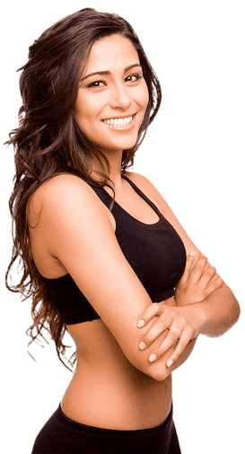

Personal trainer
Quì a Bora Bora Fitness Club puoi allenarti al meglio con il supporto dei nostri personal trainer!

Fabio Villotti, 37
"L'importante non è solo quello che trovi alla fine della nostra corsa, ma anche quello che provi mentre stai correndo"
Possiedo un diploma da Personal Trainer ISSA e certificazioni ELAV, Taping Neuromuscolare, TRX e Kettlebell. So fare massaggi drenanti, muscolari e distensivi. Ho esperienza come istruttore di sala pesi, corsi musicali, attività motorie e scuola calcio. Insieme possiamo raggiungere grandi risultati in dimagrimento, divertimento, massa e tonificazione.
Segui i miei corsi
- Boxe
- Calisthenics
- Cross Active Induction
- HIIT
Preparati con me in
- Preparazione atletica
- Forza e resistenza
- Ipertrofia
- Dimagrimento e tonificazione
- Divertimento

Adriana Lima, 25
"Conta i fiori del tuo giardino, non preoccuparti mai delle foglie che cadono a terra"
Possiedo una laurea in Scienze Motorie e sono laureanda in Nutrizione Umana. Ho anche una certificazione Cronomorfodieta e ho frequentato corsi come Antiaging Academy AFFWA e SFSM Certified Disability. Ho esperienza come preparatore atletica, mental coach, bikini bodybuilder, postural trainer.Insieme possiamo raggiungere grandi risultati in equilibrio, forza, resistenza, riabilitazione, tonificazione.
Segui i miei corsi
- Canoe polinesiane va'a
- Cycle Burn
- Aero dance
- Zumba
Preparati con me in
- Impostazione posturale
- Crossfit
- Allenamento femminile
- Bodybuilding
- Dieta chetogenica
Chris Edwards, 35
"Lo scopo della vita è lo sviluppo di noi stessi, la perfetta realizzazione della nostra natura: è per questo che noi esistiamo"
Sono un biologo nutrizionista e faccio parte dell'Ordine Nazionale dei Biologi. Ho una laurea in Scienze Nutrizione Umana e una in Scienze Motoria. Inoltre possiedo un diploma come Massoterapista, di cui ho anche esperienza. Ho esperienza anche come massaggiatore e terapista sportivo, e nutrizionista (dietologo per atleti di tennis e calcio). Ho anche un centro studio medico. Insieme possiamo raggiungere grandi risultati in dimagrimento, riabilitazione, tonificazione.
Segui i miei corsi
- Performace Long Run
- Camminata
- Performance Speed Run
- Abdominal
Preparati con me in
- Dieta mediterranea
- Miglioramento delle prestazioni
- Benessere psicologico e fisico
- Gravidanza
- Recupero funzionale
Fen Wang Li, 34
"Il corpo raggiunge ciò che la mente desidera. Adatta la mente e il corpo seguirà"
Ho diplomi in Les Milles Body Pump, Virgin Postural Fusion, Gravity Foundation e Acqua Virgin. Possiedo anche certificazioni come Fitbox, Crosscardio, Pump, Black Level Cycling. Sono stato istruttore di Active Pump, Fitness, Indoor Cycling e corsi in acqua. Insieme possiamo raggiungere grandi risultati in dimagrimento, donna, salute, tonificazione.
Segui i miei corsi
- Low Body
- Full Body
- Active Jump
- Upper Body
Preparati con me in
- Ricomposizione corporea
- Riabilitazione inforturni
- Ginnastica terza età
- Cardiovascolare
- Nuoto

Costas Garcia, 46
"Qualunque cosa tu possa fare o sognare di fare, devi solo incominciarla! L'audacia ha
in sè potere e magia"
Ho un diploma Les Milles e certificazioni ELAV, in Taping Neuromuscolare, TRX e Kettlebell. Ho esperienza come istruttore a domicilio e per anni ho accompagnato attori famosi nel raggiungimento della loro forma ideale per film. Insieme possiamo raggiungere grandi risultati in concentrazione, funzionale, rilassamento, resistenza.
Segui i miei corsi
- Pilates
- Power Yoga
- Aerogym
- Leg Flexability
Preparati con me in
- Forza e resistenza
- Ipertrofia
- Divertimento
- Crossfit
- Bodybuilding

Anastasia Smirnova, 33
"Il duro lavoro batte il talento, se il talento non lavora duro!"
Ho una laurea triennale in Scienze Motorie. Faccio l'attività di istruttore da giovane età in quanto sono sempre stata appassionata di nuoto, pallavolo e competizioni in acqua. Ho esperienza come assistente in sala e nei. Sono anche esperta di dieta e dimagrimento. Ho buone conoscenze anche di forza e resistenza. Insieme possiamo grandi risultati in adrenalina, coordinazione, forza, funzionale, tonificazione.
Segui i miei corsi
- Water Endurance
- Water Hydrobike
- Water Tone
- Water Reaxraft
Preparati con me in
- Forza e resistenza
- Dimagrimento e tonificazione
- Allenamento posturale
- Allenamento emminile
- Dieta chetogenica

Gustavo Perez
"Oggi prendi una decisione che hai sempre rimandato, e domani fai la stessa cosa. Allenerai
il muscolo che potrà aiutarti a cambiare la tua mente"
Ho una laurea triennale in Scienze Motorie, certificaizone Personal Trainer presso ELAV. Ho anche buone conoscenze di analisi e riequilibrio posturale. Sono stato istruttore di sala per 13 anni, sono pertanto esperto di allenamenti funzionali e metabolici. Mi impegno affinchè ci sia benessere psicologico e fisico in modo da raggiungere la terza età in buona forma. Insieme possiamo raggiungere grandi risultati in dimagrimento, forza, massa, resistenza, tonificazione.
Segui i miei corsi
- Flexability
- Gravity Pilates
- Mat Pilates
- Postural
Preparati con me in
- Dieta mediterranea
- Benessere psicologico e fisico
- Recupero funzionale
- Riabilitazione infortuni
- Ginnastica terza età